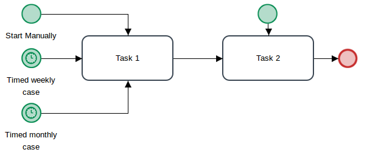

- What is the difference between Responsive Forms and normal DynaForms?
- Can the connecting lines in the process map be moved (i.e. like in Visio) to make process diagrams more readable?
- How can I change a phrase in the ProcessMaker interface?
- Can multiple cases be opened at the same time?
- Can the process map be printed or saved?
- Can multiple users login at the same time?
- Can classic processes like in ProcessMaker version 2 be created or imported in version 3?
- Are there any license restrictions for processes or plugins created in ProcessMaker?
- Can I change the source code of ProcessMaker Community Edition?
- How can I reset the counting of case numbers?
- Why can't I delete a task or subprocess?
- How can I start processes automatically at different times and in tasks?
- How can I assign the unclaimed cases to users that appear under Home > Unassigned?
- How can I add additional columns to the cases lists (Inbox, Draft, etc.)
- How can I allow a user who isn't assigned to a case to download the Input Documents and Output Documents from that case?
- How can a manager review past cases which he/she hasn't participated in?
Q: What is the difference between Responsive Forms and normal DynaForms?
A: Responsive Forms are a new feature that was added in ProcessMaker 3.0. The key difference between normal DynaForms and the new Responsive Forms is that they use Responsive Web Design (RWD), so they will automatically adapt to the width of your device and use a different style for desktop computers, tablets and smart phones. They allow multiple fields to be placed in the same row. There are other improvements, such as the separation of variables from the forms and the use of the jQuery library to improve the user interface.
Q: Can the connecting lines in the process map be moved (i.e. like in Visio) to make process diagrams more readable?
A: Regarding Visio-style curved lines, that is not currently on our road-map. However, it is possible to move the connecting lines in process diagrams. Click on a connecting line so green squares appear in it. Then drag the green squares with a mouse to move the line to a new location..
Q: How can I change a phrase in the ProcessMaker interface?
A: Login as the "admin" user (or another user with the PM_SETUP_ADVANCE permission in his/her role). Go to Admin > Languages and select the English language (or whatever language you are using). Then, export the translation file which has a .po extension. Then, edit it with PoEdit (which you can download here). Search for the phrases that you want to change and edit them. Some phrases are defined multiple times, so they many have to be changed in multiple places in the .po file. When done editing, save the .po file. Then, open ProcessMaker and go to Admin > Languages again and import the .po file. The phrases you changed should appear in the ProcessMaker interface when you reload the page by pressing CTL+F5 or CTL+SHIFT+r.
Q: Can multiple cases be opened at the same time?
A: ProcessMaker processes only one case at a time and is not designed to work in multiple browser tabs. As a best practice, do not open multiple cases in the same browser window. Each time a case is opened, the system variables for the case's unique ID number and its delegation index number are reset. Therefore, if you switch back to the first case which you opened in a separate browser tab and try to save date or route it to the next task, then you will see an error message, such as:
or:
Alternatively, to work on more than one case at a time, as a best practice open each case in different types of web browsers. For example, open the first case in Google Chrome and the second case in Mozilla FireFox.
Likewise, it is not possible to edit two processes at the same time for the same reason. Therefore, as a best practice, open each process in different types of web browsers and then work on each of them separately.
Q: Can the process map be printed or saved?
A: No, ProcessMaker can't print or save the process map. It is recommended to install the FireShot plugin for FireFox, Internet Explorer or Chrome and take a screen shot of the process map.
Q: Can multiple users login at the same time?
A: Multiple users can login into ProcessMaker at the same time as long as each user is using a separate web browser. However, multiple users can NOT be logged into ProcessMaker at the same time in the same web browser. If needing to login as a different user, either logout of ProcessMaker and then login as the other user or open a separate web browser program to login as a different user. For example, it is possible to login as user "mary" in Internet Explorer and as user "bob" in Firefox, but it not possible to login as both "mary" and "bob" at the same time in Internet Explorer.
Note: There are multisession extensions, such as Multi-Account Containers in Firefox and MultiLogin in Chrome, which can be used to allow multiple users to login to ProcessMaker at the same time in the same web browser.
Q: Can classic processes like in ProcessMaker version 2 be created or imported in version 3?
A: Processes created in ProcessMaker 2 can be imported into ProcessMaker 3 and they will have the same appearance and functionality as in version 2. There is no automated tool to convert the classic processes from version 2 into BPMN process for version 3. The only way to convert classic processes is to manually recreate them in ProcessMaker 3. If needing to create an new classic process in ProcessMaker 3, download and import this blank process (right click on the link and choose "Save As").
Q: Are there any license restrictions for processes or plugins created in ProcessMaker?
A: You are the sole owner of any process or plugin which you create in ProcessMaker Community Edition or Enterprise Edition, and you can license its use any way you like.
Q: Can I change the source code of ProcessMaker Community Edition?
A: The source code of ProcessMaker Community Edition is licensed under the GNU Affero General Protection License (AGPL) version 3.0. Basically, this means that you can change the source code, but any changes to ProcessMaker's source code must be shared with ProcessMaker, Inc. If you are just changing configuration files (like db.php, paths_installed.php, env.ini, etc.) or just changing a couple lines of the source code to tweak something, then don't worry about informing us of your changes. However, if you have added new functionality to the source code of ProcessMaker or fixed a bug, then we would like to see the code changes, because we might want to include it in the next version of ProcessMaker. You can post the code you changed in the Code forum. If you don't wish to post your code on a public forum, you can email your code to: info@processmaker.com
As a practical matter, it is generally easier to develop new functionality for ProcessMaker in a plugin, rather than changing the source code. It is recommended to use plugins, if you don't want to share your code.
Q: How can I reset the counting of case numbers?
A: In version 3, the case number for new cases is set by adding 1 to the value of the wf_WORKSPACE.APP_SEQUENCE.ID field in the database. For example, setting the value of this field to 0 would reset the counting of cases, so the next case will have the number 1.
First open a terminal and login to MySQL from the command line. In Windows it is necessary to first change to the directory where MySQL is installed.
Windows with Bitnami installer in PM 3.0.1.8 and later:
Windows with automatic installer in PM 3.0.1.7 and earlier:
Note: The AppData directory is a hidden directory, but the File Explorer can be configured to show hidden files.
Login to MySQL as the "root" user:
Then, change to the database used by the ProcessMaker workspace, which is named wf_workflow by default:
Then, change set a value of 0 in the APP_SEQUENCE.ID field and exit MySQL:
Q: Why can't I delete a task or subprocess?
A: If you try to delete a task or subprocess, when there are currently open cases in that process, then you will see the error message:
Bad Request: Current activity has cases and cannot be deleted
All the cases for that process need to either be completed or canceled before ProcessMaker will allow the task/subprocess to be deleted. If the cases in this process aren't important, then all of them can be deleted by going to Designer. Select the process in the list and click on the Delete Cases button.

Q: How can I start processes automatically at different times and in tasks?
A: Start events can be attached to any task in the process, so it is possible to have multiple places to start a process. In addition, multiple start events can be added to the same task. For example, it is possible to initiate cases manually in the ProcessMaker interface, and also have Timer Start Events attached to the same task that initiate cases automatically.

Q: How can I assign the unclaimed cases to users that appear under Home > Unassigned?
A: Create Process Supervisor for users who have the PM_SUPERVISOR and PM_REASSIGNCASE_SUPERVISOR permissions in their roles. Define that supervisor for every process where cases should be reassigned. Then, the users who are process supervisors can reassign the unassigned cases by going to Home > Reassign in the sidebar.
Q: How can I add additional columns to the case lists (Inbox, Draft, etc.)?
A: The Custom Case Builder in the Enterprise Edition can be used to add custom columns to the cases lists. If using the Community Edition, the source code can be altered to display extra columns, but the code is very complex and it is not recommended.
Instead, a plugin can be used to add a new option in the HOME > Cases sidebar and create a custom page to list the cases with extra columns. The list of cases can be obtained using the REST API or Web Services.
It is recommended to export the case data to display in the extra columns to a Report Table. Then the plugin code can query the Report Table to populate the additional columns in the case list. If not a programmer, the easiest solution is to simple add the additional information to the case titles by inserting variables that will be displaced in the cases lists.
Q: How can I allow a user who isn't assigned to a case to download the Input Documents and Output Documents from that case?
A: Users who are not currently assigned to the case nor are the owner of the document need Process Permissions to access the Input and Output Documents attached to the case. Additionally, a new security restriction added in ProcessMaker 3.1.3 and later prevents users from downloading files without a valid login session and permission to access the files. This security restriction is enabled by default. When trying to access a file without an Input or Output process permission, a "403 Access denied" error message will appear:

To allow the public to download files without logging-in or validating their permissions to access the files, then this security restriction can be turned off. Edit the env.ini file of your ProcessMaker server and add the
following line:
Q: How can a manager review past cases which he/she hasn't participated in?
A: Assign the user who is a manager to the PROCESSMAKER_MANAGER role (or create a new role with the PM_SUPERVISOR permission). Then, open each process to which the user should have access to the cases and assign the user as a Supervisor to the process. In the same "Supervisors" dialog box, scroll down and assign the DynaForms and Input Documents which the Supervisor will be able to open and edit.
Then, go to [b]Home > Review[/b] to open the cases. When a case is opened, it will be display the first DynaForm or Input Document. To see others, go to Information > DynaForms or Information > Uploaded Documents in the menu.
If only needing read-only access to the cases, then assign the user to a role which has the PM_ALLCASES permission. Then, give the user Process Permissions to see the cases. Go to Home > Advanced Search to see the cases. To see all the cases in the workspace, don't enter any search terms and click on the Search button.